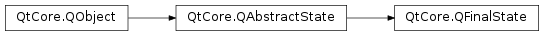

QFinalState¶
Note
This class was introduced in Qt 4.6.
Detailed Description¶
The
PySide2.QtCore.QFinalStateclass provides a final state.A final state is used to communicate that (part of) a
PySide2.QtCore.QStateMachinehas finished its work. When a final top-level state is entered, the state machine’sPySide2.QtCore.QStateMachine.finished()() signal is emitted. In general, when a final substate (a child of aPySide2.QtCore.QState) is entered, the parent state’sPySide2.QtCore.QState.finished()() signal is emitted.PySide2.QtCore.QFinalStateis part of The State Machine Framework .To use a final state, you create a
PySide2.QtCore.QFinalStateobject and add a transition to it from another state. Example:QPushButton button; QStateMachine machine; QState *s1 = new QState(); QFinalState *s2 = new QFinalState(); s1->addTransition(&button, SIGNAL(clicked()), s2); machine.addState(s1); machine.addState(s2); QObject::connect(&machine, SIGNAL(finished()), QApplication::instance(), SLOT(quit())); machine.setInitialState(s1); machine.start();See also
QState.finished()
-
class
PySide2.QtCore.QFinalState([parent=nullptr])¶ Parameters: parent – PySide2.QtCore.QStateConstructs a new
PySide2.QtCore.QFinalStateobject with the givenparentstate.
© 2018 The Qt Company Ltd. Documentation contributions included herein are the copyrights of their respective owners. The documentation provided herein is licensed under the terms of the GNU Free Documentation License version 1.3 as published by the Free Software Foundation. Qt and respective logos are trademarks of The Qt Company Ltd. in Finland and/or other countries worldwide. All other trademarks are property of their respective owners.